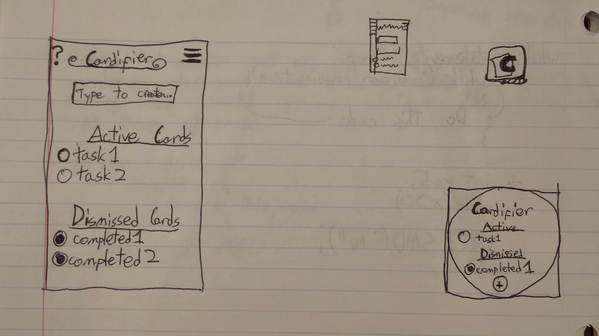

Cardify (working title) is a concept I had for an Android Wear Watch/phone application. In it, you use your voice (or typing in the phone app) to create "cards" that are stored as both undissmissable text notification cards on the watch as well as list items on the phone. You can dismiss the "cards" by checking the bubble in the phone or watch app, or dismiss the cards directly from the notification by swiping left and tapping the "dismiss" button. Once dismissed, "cards" appear in the app as dismissed and no longer show up as notification cards. These dismissed cards are saved for a while and then automatically deleted after a few days or so. While still archived, these dismissed "cards" can be "reactivated" by unchecking the bubble next to them in the Dismissed section of the app. Once "reactivated," the cards will reappear as notifications on the watch and the "card" will move from the "Dismissed Cards" list back to the "Active Cards" list, and its bubble will return to being unchecked. Besides some rough sketches and this concept page, no actual coding has been done towards designing this application yet. As of now, it is still just a concept.
A rough sketch of what Cardify might look like on both phone and watch, as well as some logo design ideas.